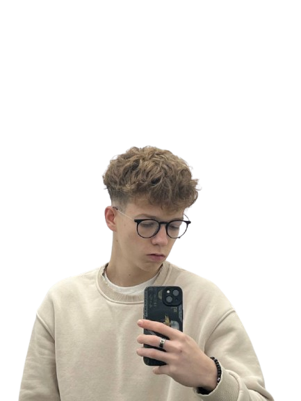

Ce fac cel mai bine
- Design web modern, curat și adaptat imaginii tale
- Pagini responsive care arată bine pe orice ecran
- Structură clară și interacțiuni ușor de folosit
Salut 👋 Eu sunt
Transformez ideile în site-uri frumoase, rapide și funcționale. Design modern + cod curat + pasiune pentru performanță.
De la concept la lansare, lucrez cu atenție la detaliu și dedicație pentru rezultatele tale.
Haide, discutăm!
Sunt Maxim, am 17 ani și studiez în anul 2 la colegiu pe profil programare. Am absolvit cursuri Certiport și am experiență în design web modern. Îmi place să îmbin creativitatea cu disciplina, astfel încât fiecare site să arate bine, să funcționeze bine și să fie ușor de folosit.
Lucrez rapid, respect termenele și comunic clar cu clienții. Proiectele mele sunt gândite pentru mobil, desktop și pentru oameni care vor să transmită profesionalism și energie.
Realizez site-uri moderne, profesioniste și customizate pentru studenti, freelanceri și micile afaceri care vor să iasă în evidență.
Construiesc interfețe prietenoase, responsive și ușor de navigat, folosind HTML, CSS și JavaScript pentru o experiență fluidă.
Ofer suport de la idee până la lansare: consultanță de design, feedback rapid și actualizări adaptate cerințelor tale.
Am lucrat la site-uri care arată profesional și funcționează bine pe orice dispozitiv. Iată câteva exemple de stil și structură pe care le pot oferi.
Acesta e site-ul meu live - design modern, animații fluide și responsiv pe toate device-urile. Click pentru a vedea!
Deschide →Colecție completă de designuri și proiecte web. Vezi aici toți designurile și ideile mele creative.
Exploreaza →Design curat, secțiuni clare, call-to-action vizibil și structură optimizată pentru conversie.
Pagini care prezintă proiecte, experiență și abilități într-un format ușor de parcurs.
Formulare simple, date de contact bine organizate și un design prietenos pentru clienți.
Energie și disciplină
Pe lângă programare și web design, mă antrenez constant și particip la activități sportive care îmi întăresc disciplina și motivația. Sportul mă ajută să rămân concentrat și să gestionez proiectele cu seriozitate.
Acest echilibru între minte și corp se reflectă în munca mea: proiectele sunt structurate, dinamice și pregătite pentru performanță.
Abilități și echipament
Lucrez cu cele mai moderne și eficiente tehnologii pentru a livra site-uri rapide, sigure și ușor de întreținut.
Parcursul meu
Am finalizat cursurile oficiale Certiport și am obținut certificări în domeniul programării și web design.
Am creat primul meu site profesional pentru o mică afacere locală, cu design custom și interactivitate.
Am lucrat la 10+ proiecte diverse, de la landing pages la portofolii complete, cu clienți din diferite industrii.
Continui să învăț și să mă dezvolt, lucrând pe proiecte din ce în ce mai complexe și stimulante.
Feedback-ul clienților
"Maxim a creat un site exact cum mi-l imaginam. Rapid, profesional și gata în timp. Recomand!"
"Abilitatea lui de a transforma o idee într-un site frumos și funcțional este remarcabilă. Top tier!"
"Site-ul meu e acum o adevărată carte de vizită. Mulțumesc Maxim pentru dedicație și atenție la detalii!"
Haide să transformăm ideea ta într-un site care te reprezentă și generează rezultate.
Dacă vrei un site nou, un design actual sau ai o idee pe care vrei să o transform într-un proiect online, sunt aici să te ajut.